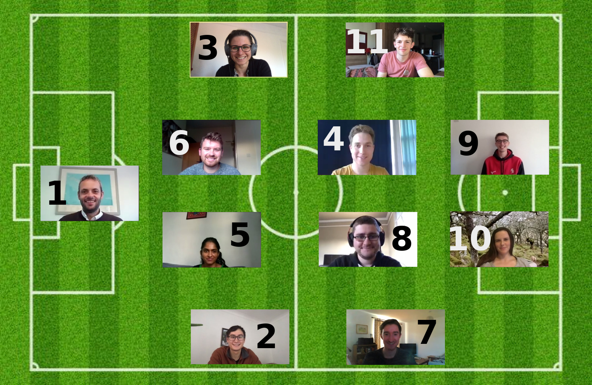
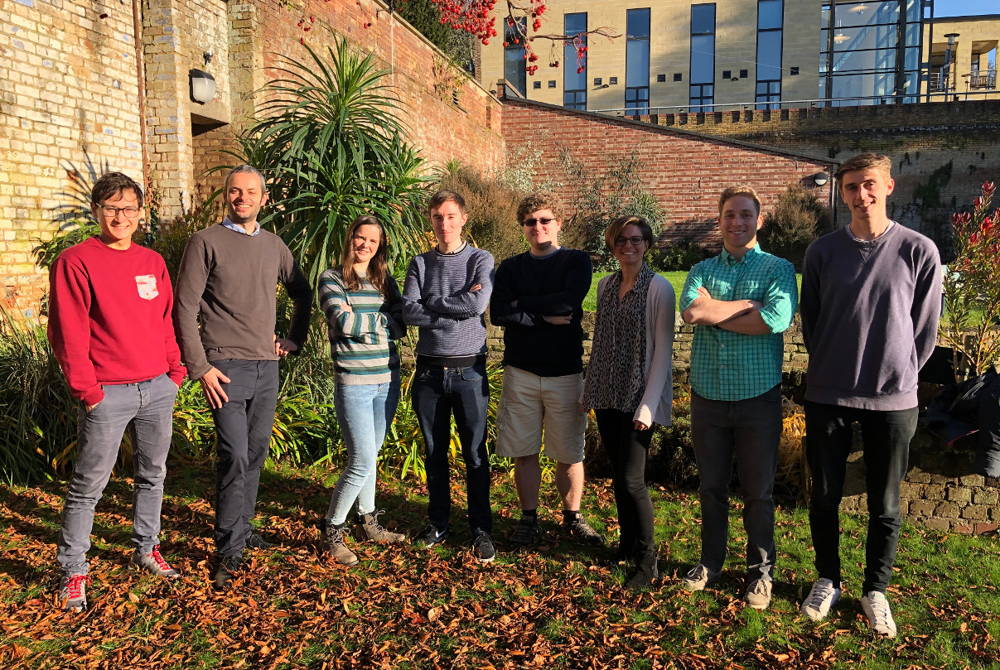
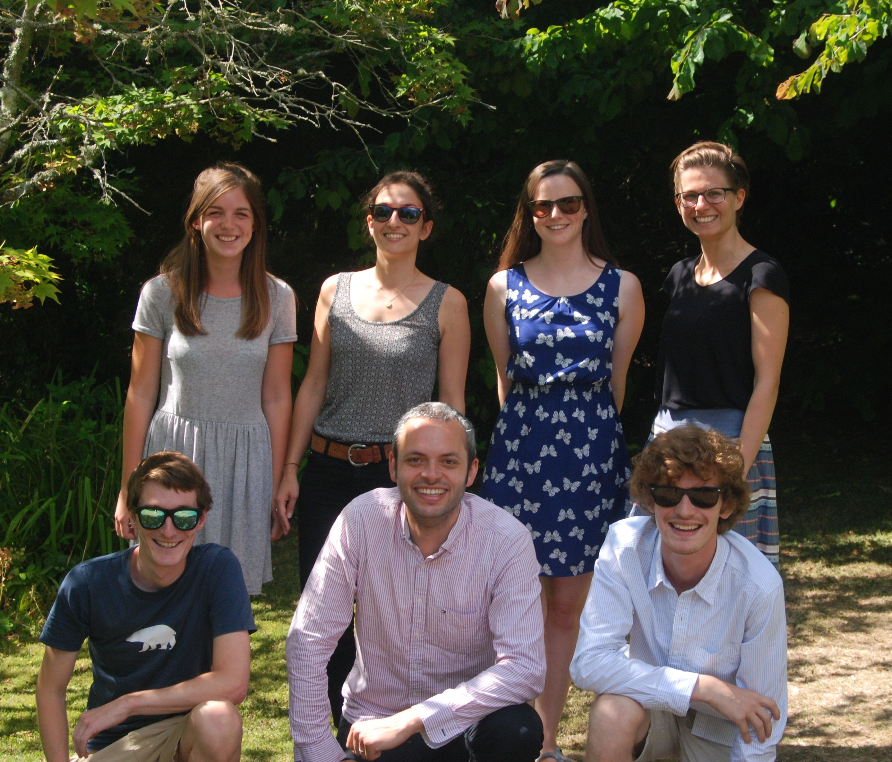
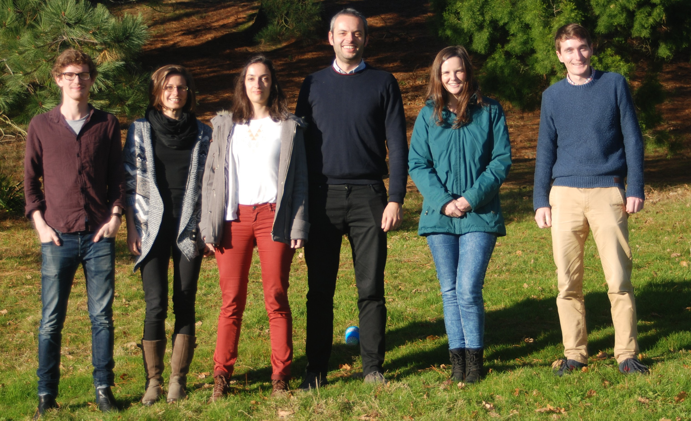
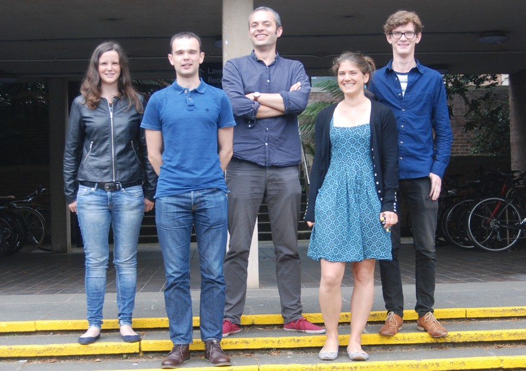
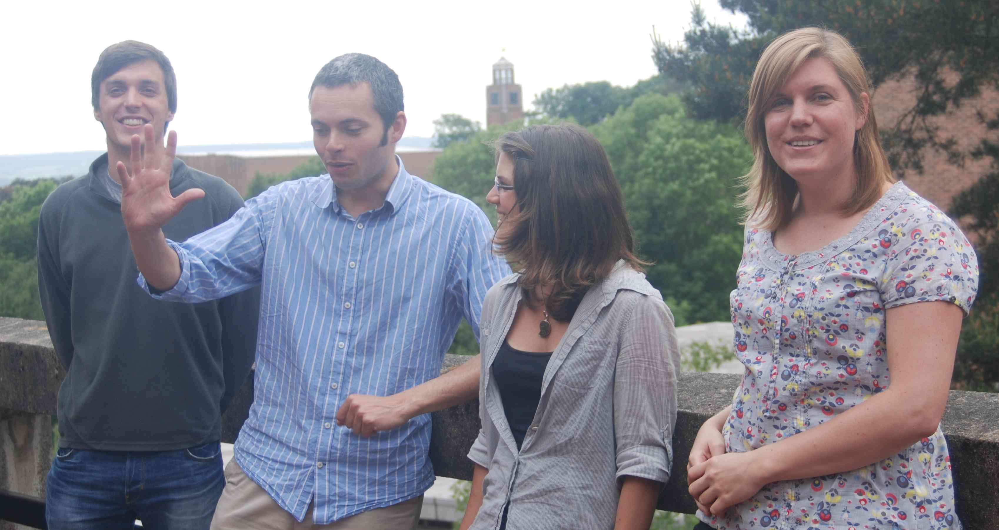

Old Photos

Figure 7: Today’s line-up: 1. Hugo Lambert, 2. Jake Eager, 3. Marianne Pietschnig (on a yellow card from the first leg), 4. Denis Sergeev, 5. Monisha Natchiar, 6. Alex Loader, 7. Jonathan Beverley, 8. Robbie Ridgway, 9. Harry Mutton, 10. Ruth Geen, 11. Toby Ferrison (on loan from Natural Sciences). October 2020.

Figure 6: Left-to-right: Jake Eager (hanger-on), me, Ruth Geen, Jonathan Beverley, Robbie Ridgway, Marianne Pietschnig, Denis Sergeev, Harry Mutton. Thanks to Rebecca Varney, the first person to appear in and take the photo. However, only three people in the picture actually knew what a simple 4-4-2 formation is. November 2019.

Figure 5: All Left-to-right: Back row, Rebecca Varney (summer student), Marion Saint-Lu, Ruth Geen, Marianne Pietschnig, Front row, Alex Todd, me, Neil Lewis (comedy sidekick). Thanks to Michelle McCrystal for the photo. July 2018.

Figure 4: Left-to-right, Neil Lewis (perpetual summer student), Marianne Pietschnig, Marion Saint-Lu, me, Ruth Geen, Alex Todd. Thanks to Mat Collins photography for another great pic. He only charged me ten pounds for this one. November 2017.

Figure 3: Left-to-right, Ruth Geen, Angus Ferraro, me, Lilo Henke, Neil Lewis (summer student). Angus’s last day. August 2016.

Figure 2: Left-to-right, Joe Osborne, me, Lilo Henke, Margriet Groenendijk. They told me it would look better if we staged it so it looked natural. June 2013.
Figure 1: Me before this all started. What did I know. March 2010.